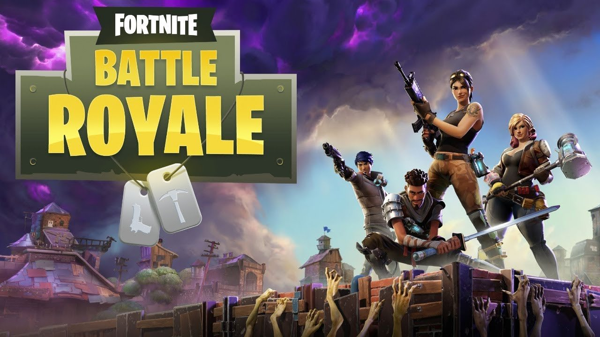
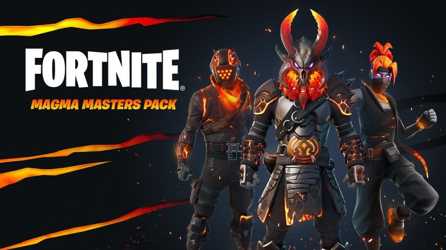

Amistades en videojuegos
A ciertas personas que desconocen del tema no les parecería bien que sus hijos hicieran amistades por videojuegos
pero la verdad, yo como jugador activo, he tenido la oportunidad de conocer personas por medio de mi videojuego
favorito, son personas totalmente normales que disfrutan al igual que tu el videojuego.
He conocido buenas amistades de algunas partes de México, seguimos en contacto aun fuera del juego,
uno va viendo como son estas personas al momento de conocerlas ya de ahí decide si dejarlo entrar a su
circulo de amigos.
Yo agradeco por las personas que he conocido que comparten mi mismo gusto por el videojuego, la pasamos muy bien,
cuando estamos hechando nuestras partidas, ganemos o perdamoss, lo divertido es estar con ellos, yo los conocí pot mi juego
favorito Fortnite, el cual llevo 3 años y medio jugandolo, jugando como si fuera la primera vez que entre.

